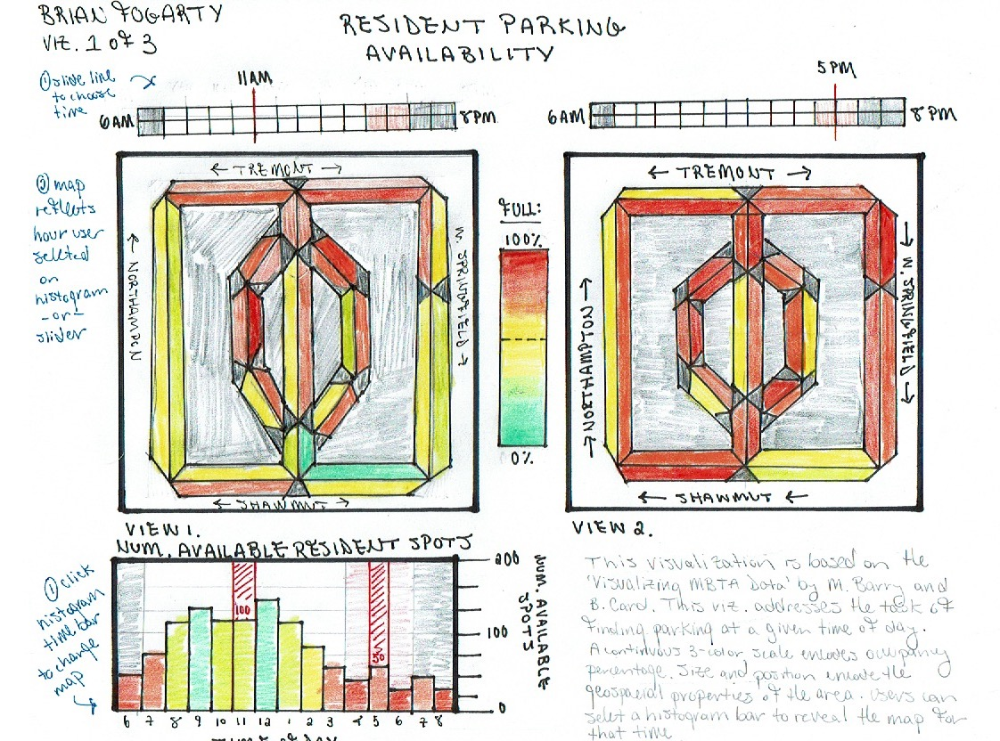
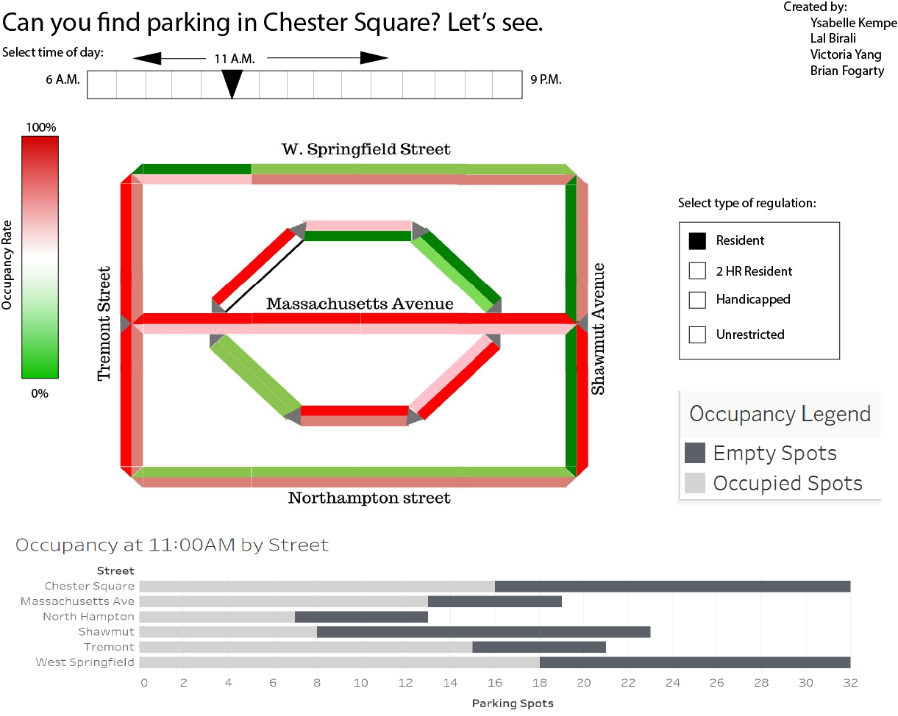

Title: A day's worth of parking in Chester Square
Brian Fogarty, Ysabelle Kempe, Lal Birali, Victoria Yang
Service-Learning Course Project as part of DS 4200: Information Presentation and Visualization, taught by Prof. Cody Dunne, Data Visualization @ Khoury, Northeastern University.
This project was developed in conjunction with the Chester Square Neighborhood Association. The goal of the Neighborhood Association is to show that there is a problem with parking availability and distribution in the area. Residents are often unable to find parking close to their homes, and there are complaints of inefficient parking practices.
The Neighborhood Association wants to bring the problem of parking to the attention of local government. The Association already knows there is a problem and is able to explain the issue and potential causes in words (e.g., not enough parking, residents don’t know where to park, etc.), but they want to be able to show numbers that prove their point.
We hope this project serves as a valuable tool for the Neighborhood Association to communicate the need for change to authorities. Cars are a key player in daily urban life, and parking needs to be taken seriously in order to create a better standard of living for those on both sides of Chester Square.
When designing our project, we asked ourselves how occupied Chester Square parking is throughout the day. We wanted our final piece to show change over time, as well as give users an idea of how difficult it is to find parking at any given time. Through our own research and data collection, we have concluded that a reasonable response would be to more clearly mark parking spots, as well as conduct another survey.
Include the interactive visualization as part of this page. Static example follows.
Embedded MP4 demo video using the HTML5 <video> tag. For example, this screen recording Prof. Cody Dunne made of Mike Bostock's flexible transitions in D3 slide:
Our visualization includes an interactive map showing occupancy rate, as well a bar chart that shows the empty and occupied parking spots on each street. The user is able to use a slider to change the time of day, which is reflected in the visualizations. You can also filter based on regulation type.
For our map, we used color to represent occupancy rate. We used a color scale of red, white, and green because we believed it was intuitive for red to mean that there are less spots available and green to mean there are more spots available. We designed the map to only show streets because we didn't want to clutter the visualizations with buildings or other landmarks.
We included the bar chart as well because it is very important for a user not only to know the proportion of spots filled, but to know exactly how many spots are left. We used a simple stacked bar chart to show this data, which uses area to show the parking capacity of a certain street, as well as area and color to show the breakdown of empty versus occupied spots.
For interactivity, our goal was to have the slider to change the time, checkboxes to filter by interactivity, and brushing and linking that would highlight the street in the bar chart when it is clicked on in the map view (and vice versa).
Below, you can see screenshots of our final visualization.
INSERT PNG HERE
Below, you will find links to our presentation slides.
INSERT LINK HERE
final visualization screenshots (PNG images), design justifications, UI walk-through, and linked presentation slides.
Summary of data, data types, and data preprocessing.
Expectation: Data sources match the problem statement and are appropriate. These descriptions should be very explicit so someone could read your page and properly reproduce your results.
Our data was collected during a parking survey conducted in Chester Square from 6 a.m. to 8 p.m. on Oct. 29, 2019.
Filled spots, empty spots, and blocked spots were recorded by hand on the hour. We filled this data into a Google Sheet by hand and exported it as a csv file. We created both a horizontal bar chart and a map of Chester Square. We cleaned and processed the data with Python. For the bar chart data, we iterated through the data and aggregated the number of occupied and empty spots for each street for each hour, exporting the result as a csv. For our bar chart, our data includes street name as a string, empty spots as an integer, and occupied spots as an integer. It also includes the time of day as data type of time. In order to preprocess the data for the map, we cleaned, aggregated, and reformatted the data using Python with the NumPy and Pandas libraries. The output was a csv file with polygon coordinates (floats), occupancy counts (integers), occupancy rates (floats), and percentages (floats).
| Index | Domain Task | Analytic Task | Search Task | Analyze Task |
| 1 | What are the occupancy rates at different times of the day? | Identify | Browse | Discover |
| 2 | What is the average duration a single vehicle is parked? | Identify | Lookup | Present |
| 3 | Where are the problem areas for after-work parking? | Identify | Browse | Present |
| 4 | Who are the owners of vehicles parked in the SA? | Identify | Browse | Discover | 5 | How do the various parking regulations affect occupancy and turnover rates? | Summarize | Explore | Present |
| 6 | What are the turnover rates for different times of day? | Compare | Browse | Present |
This task table shows that our main goal is to understand how the occupancy rates fluctuate throughout the day. It is also to understand problem areas for parking. What are the areas that most frequently have no available spaces? By understanding where the problem areas are and what time of the day issues arise, we can help the Neighborhood Association prioritize certain areas for improvement.
Expectation: Clearly describes domain tasks, processes, goals and abstract tasks for domain problems.
Below, you can see our initial visualization draft. Originally, we had imagined the color scale as red, yellow, and green, but changed it to red, white, and green in later iterations. because that is more intuitive. We looked at this vis sketch and decided to alter the supplementary bar chart to instead focus on street, rather than time of day. We wanted both visualizations to represent the same time of day, so that the user could look at a single moment in time from two perspectives.
Our next visualization sketch, shown below, was done digitally using Tableau and Adobe Illustrator. We changed the color scale to be more intuitive, as well as altered the meaning of the bar chart to encompass number of empty/occupied spots, for reasons discussed above. We also added a filter option for users to filter by regulation in this iteration. We did this because we wanted users to have the option to make the vis more granular. We kept the slider feature to change the time of day.
INSERT WHAT FINAL DESIGN DECISIONS WERE MADE
Sketches and design choices to justify final visualization.
Expectation: Evidence of iterative improvement. Logical discussion of design choices grounded in theory from course. Discusses feedback from usability testing.
Parking is an extraordinarily important part of urban life. It allows people to own cars and have greater freedom of transportation. But, especially in a city like Boston, real estate is incredibly valuable and, well, cars take up a lot of space.
This parking survey was designed to analyze how well parking is being
used in the Chester Square area in an effort to propose solutions that will
better serve the residents. We believe a major and simple solution would be
to add lines for parking spots. Parking was almost never used efficiently in
Chester Square, as people would park too far apart from each other and there
was no consistency with car placement.
For further analysis, we would also recommend a follow-up parking survey
be performed on a day with more ideal conditions. We were forced to work on a
rainy day when there was construction, which skewed our results.
List here where any code, packages/libraries, text, images, designs, etc. that you leverage come from.